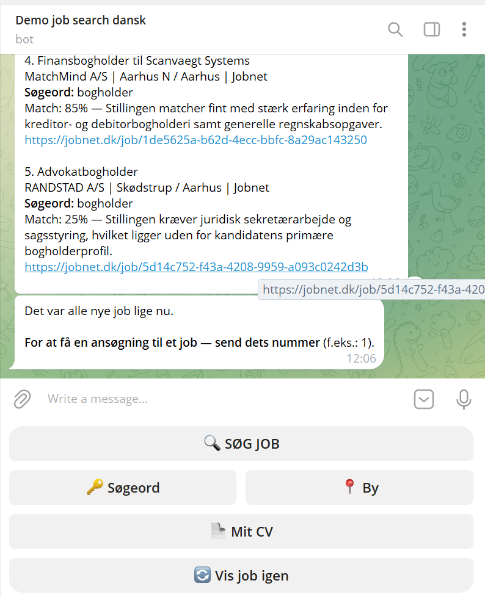
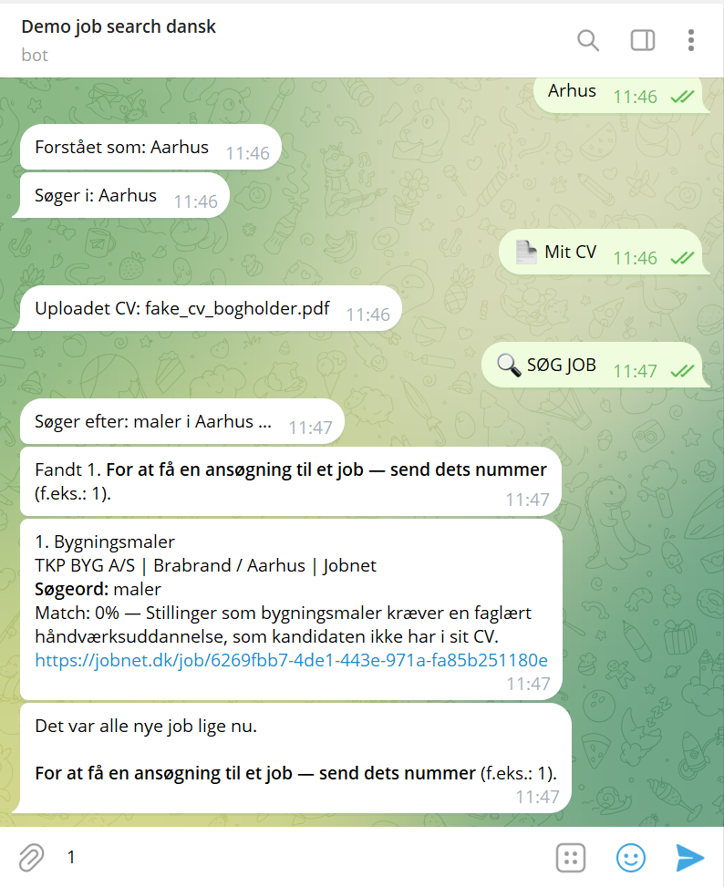

Honest match assessment
It isn't just a search for matching words. If the CV has no relevant experience for a position, the bot honestly shows 0% — no "consolation percentages". The job still stays on the list, because whether to apply is always the person's own choice.
Not just a keyword match, as you often see on other platforms — the AI assesses the real substance: does the experience actually match the role's requirements, or is it only a superficial overlap of words? If something real is missing, the bot says so honestly — instead of showing a nice but misleading percentage.


